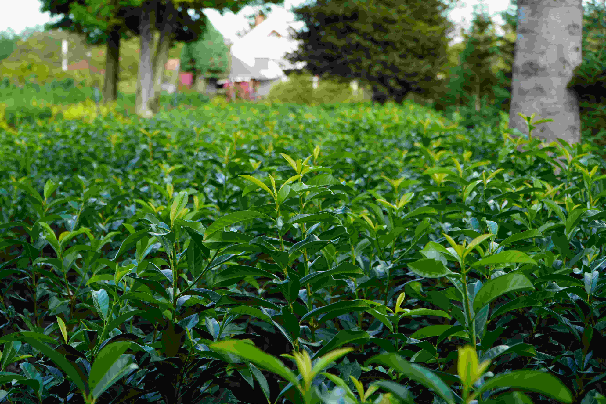
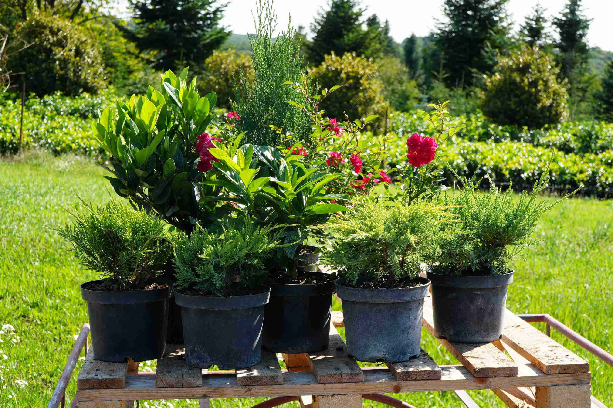
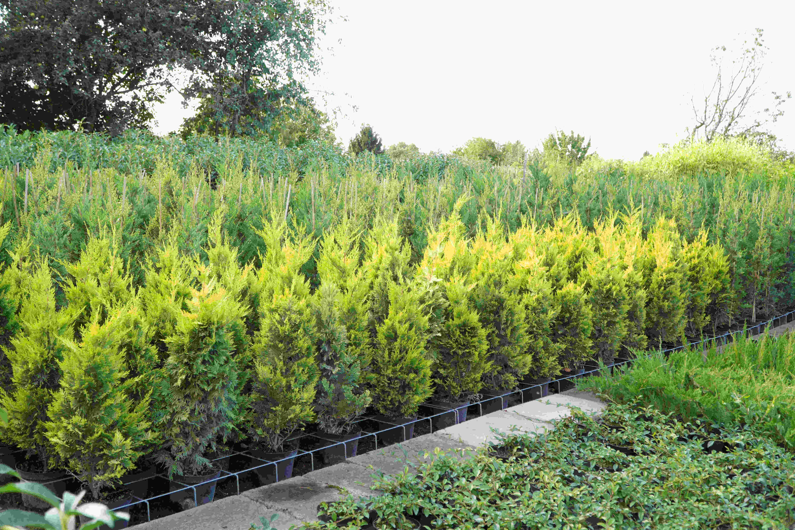

1986 óta szenvedéllyel foglalkozunk különleges díszfák és egzotikus növények termesztésével. Széles kínálatunk lehetőséget nyújt arra, hogy magánszemélyek és kertépítő szakemberek is egyaránt megtalálják az ideális növényeket, kompromisszumok nélkül. Kiskereskedelmi és nagykereskedelmi vásárlóinkat is örömmel fogadjuk. Ismerje meg egyedi választékunkat és alakítsa kertjét különleges élménnyé szakértői támogatással!



Tartós, elegáns zöld növényzetet keresel? A tiszafa lassan növekvő, rendkívül sűrű lombozatú tűlevelű, amely kiválóan tűri a metszést, a napos és az árnyékos fekvést is. Formára nyírva vagy szabadon hagyva egyaránt igényes megjelenést ad a kertnek, és megfelelő gondozás mellett akár évtizedekig szépen fejlődik.
Szükséged van gyorsan növő, megbízható sövényre? A leylandi ciprus rendkívül gyorsan fejlődik, sűrű, puha lombot nevel és könnyedén illeszkedik bármilyen kertstílushoz. Strapabíró és dekoratív, ezért gyakori választás otthoni kertekben és professzionális kertépítésekben is, ha gyors és esztétikus megoldásra van szükség.
A babérmeggy dús, fénylő zöld leveleivel és finom tavaszi virágzásával stílust és életet visz bármely kertbe. Napos és árnyékos helyeken is egyaránt jól fejlődik és elegáns, könnyen karbantartható sövényt alkot. Tökéletes választás azoknak, akik esztétikus, de kevés gondozást igénylő megoldást keresnek – akár modern, akár természetközeli kertbe.
Dobd fel kerted hangulatát a korallberkenye ragyogó piros hajtásaival és fényes zöld lombjával! Ez a látványos cserje egész évben dekoratív megjelenést nyújt, így kiváló választás színes, figyelemfelkeltő sövényekhez vagy karakteres kertészeti kiemelésekhez.
Érdekel, hogyan gondozd növényeidet, vagy szeretnéd megtervezni kerted? Böngészd át a leggyakoribb kérdéseket, ahol szakértői tippeket és gyakorlati tanácsokat találsz.
Elérhetőség
Kérdéseid vagy ötleteid vannak? Szívesen segítünk, keress minket bármikor!